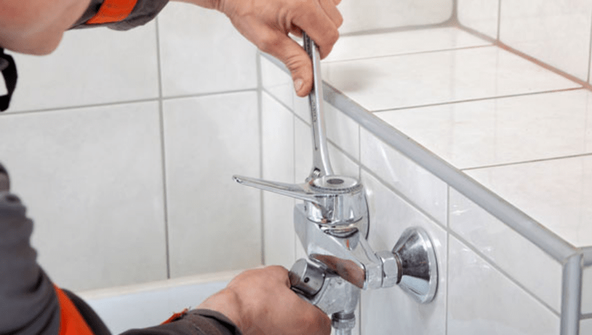

о
С
Н
О
В
Н
Ы
Е
У
С
Л
У
Г
И
01
Достаточно знать:
Благодаря опыту работы с разными материалами и техническими решениями, наши специалисты могут подобрать лучшее. Заказчику не нужно становиться строителем и погружаться в изучение большого объёма информации, часто противоречивой, о конструкциях, технических решениях и продукции для их реализации, — за него это делаем мы.
-
Черновые работы01
КЛАДКА СТЕН.
Комплекс работ, по возведению перегородок из блоков в помещении. Этот этап работ, позволяет увидеть распланированное по проекту пространство вживую.ШТУКАТУРКА СТЕН.
Создание плоской и ровной поверхности для последующего нанесения отделочных материалов. В штукатурные работы, так же входит подготовка стен к будущим работам: монтаж маячкового профиля, обработка стен бетоноконтактом. Штукатурка стен — один из самых ответственных этапов работ, т. к. именно после штукатурки, помещение приобретает правильную геометрию плоскостей и углов.ГИДРОИЗОЛЯЦИЯ МОКРЫХ ЗОН.
Обычно делается перед стяжкой, но после штукатурки. Пол в мокрых зонах помещения обрабатывается битумной эмульсией (праймер), затем, на подготовленную поверхность укладывается битум в рулонах и приклеивается путём нагревания. После гидроизоляции можно осуществлять заливку стяжки в помещении.СТЯЖКА ПОЛА.
Включает все работы по базовому выравниванию плоскости пола на всей площади объекта.МОНТАЖ ГИПСОКАРТОНА.
Монтаж потолков, ниш из ГКЛ. Очень ответственный этап работ, т. к. необходимо выполнить конструкцию в единой плоскости (если иное не предусмотрено проектом), монтировать конструкцию согласно СНиП, чтобы в последующем исключить провисание потолка.ШПАТЛЕВКА ПОВЕРХНОСТЕЙ.
Работы по финальному выравниванию стен и потолков. После процесса штукатурки в стенах остаются небольшие вкрапления, которые и заполняет шпатлевка. Стыки гипсокартона заполняются специальной смесью и армируются малярной лентой, затем листы гипсокартона шпатлюются. После выполненных работ, поверхность зашкуривается. -
ЭЛЕКТРОМОНТАЖНЫЕ РАБОТЫ02
Качество работ зависит от правильно выполненного монтажа и от материалов, используемых в работе. Например, качественная проводка обеспечивает стабильную работу всех бытовых приборов даже при высокой нагрузке. В отличие от проводки низкого качества, которая постоянно греется и может вызвать пожар. Важно выбрать правильные устройства защитного отключения, останавливающие подачу тока, в случае нагрева кабеля, а так же розетки и выключатели.
На этапе проектирования необходимо просчитать примерные нагрузки в помещении и приложить к основному проекту однолинейную схему. Это поможет избежать путаницы в процессе монтажа, а также сэкономить огромное количество времени.
Человек, не имеющий отношения к строительству, вряд ли будет разбираться в нормативах и скорее всего не увидит существенную разницу между огромным количеством марок кабеля и устройств защитного отключения, предлагаемых сегодня на рынке. Квалифицированный электрик эту разницу знает и никогда не будет работать с материалами низкого качества. Это позволяет избежать множества проблем, которые несомненно могут возникнуть в процессе эксплуатации объекта. Профессионально выполненные электромонтажные работы обеспечивают стабильную работу всей электрики и защищают от будущих неприятностей, связанных с электричеством.
-
- 

САНТЕХНИЧЕСКИЕ РАБОТЫ03
Сантехнические работы — обеспечение будущего жилого или коммерческого помещения необходимыми коммуникациями (канализация, отопление, водоснабжение). Специалисты по сантехническим работам знают виды и назначение материалов, оборудования, ассортимент и способы измерения диаметров труб, фитингов и арматуры, а также, назначение и правила применения различных инструментов, используемых в этой области.
Качественно сделанная инженерная система прослужит много лет и будет работать, не причиняя неприятностей при эксплуатации. Помимо квалификации специалиста, который занимается монтажом, необходимо уделить особое внимание материалам, которые планируется использовать. Все материалы должны быть сертифицированы и приобретены у официальных дилеров, чтобы исключить вероятность подделки.
-
ВЕНТИЛЯЦИОННЫЕ РАБОТЫ04
Вентиляция — это процесс удаления отработанного воздуха из помещения и замена его уже отчищенным воздухом. При этом может проводиться: кондиционирование воздуха, фильтрация, подогрев или охлаждение, увлажнение или осушение, ионизация.
Вентиляция обеспечивает необходимые условия (температуру, относительную влажность, скорость движение и чистоту воздуха) воздушной среды в помещении, благоприятные для здоровья и самочувствия человека, которые отвечают требованиям санитарных норм, технологических процессов, строительных конструкций зданий, технологий хранения.
Ошибочно полагать, что процесс монтажа вентиляции прост и предельно понятен. Чтобы оборудовать помещение правильно, необходимо сделать проект вентиляции, а также необходимые расчеты (объем помещений, количество необходимого объема воздуха, комфортная скорость потока). Правильно спроектированная и смонтированная система климата, позволит находиться в комфортной среде в любое время года.
-
МАЛЯРНЫЕ РАБОТЫ05
Поклейка стеклохолста/флизелина.
Материал клеится на стены и потолок, после базовой шпатлевки и шлифовки основания. Поклейка такого материала на стены, скроет мелкие трещины и неровности, которые есть на стенах, а также защитит от образования новых, которые появляются в процессе усадки здания.Поклейка стеклохолста/флизелина.
Продается в готовом виде (в виде пасты) и применяется в случае последующей покраски стен. Она обладает мелкой фракцией (в отличие от простой шпатлевки) и наноситься на поверх обычной шпатлевки. Так же, в обязательном порядке наносится на потолки перед покраской.Монтаж полиуретановых молдингов.
Выполняется перед покраской. Этот этап работ, требует аккуратности и точности подрезов, чтобы стыки полиуретановых молдингов смотрелись аккуратно.Покраска стен и потолков.
Финальный этап в малярных работах. К этому этапу приступают, когда все основные работы уже выполнены. Обычно, стены и потолки красят в два (реже в три) слоя. Способов покраски немного. В большинстве случаев, мастера обходятся валиками и кисточками, в некоторых случаях пульверизаторами.Поклейка виниловых или флизелиновых обоев.
Для поклейки обоев требуется менее значительная подготовка стен, чем под покраску. Обычная практика, когда после двух слоев шпатлевки, основание готово под поклейку обоев. Обои клеятся после покраски потолков и монтажа полиуретана.Выполненные малярные работы придают помещению эстетически красивый и законченный вид, в отличие от скрытых работ, таких как прокладка канализации, системы отопления или монтаж электрики. Современные тенденции в дизайне заставляют мастеров подходить к этому процессу особенно серьезно. Работа хорошего мастера, отличается красотой, долговечностью и высоким качеством.
-
ПРОЧИЕ РАБОТЫ06
Укладка плитки
Плитка — это долговечный материал, который, при правильном монтаже, прослужит долгие годы. Для пола, обычно используется более толстая плитка, чем для стен. Напольная плитка должна иметь шероховатую поверхность и выдерживать большие нагрузки, чем настенная. Технология укладки плитки содержит в себе множество особенностей и, часто, в процессе необходимо иметь специальное оборудование подрезки плитки под углом 45˚ для высверливания отверстий.Укладка напольных покрытий.
Напольные покрытия бывают разными: ламинат, паркетная доска, инженерная доска, паркет. Стоимость и скорость работ напрямую зависят от стоимости и класса выбранного материала. На каждое из видов напольных покрытий требуется отдельный перечень сопутствующих материалов.Работы по камню.
Чаще встречаются в ремонте премиум-класса, когда в ход идет мрамор, гранит или декоративный камень. Чтобы качественно выполнить работы такого класса, мастер должен иметь в распоряжении соответствующее строительное оборудование и опыт работы с соответствующим материалом.Монтаж чистовой сантехники.
Ремонт чистовой сантехники (унитаз, ванна, краны, радиаторы, аксессуары), обычно производится в самом конце ремонта, чтобы случайно не испортить, либо монтируется в процессе и после монтажа оборачивается плотной пленкой.Монтаж чистовой электрики: производится в самом конце ремонта, монтируются розетки с рамками, освещение и электроприборы.
В таких работах, как укладка камня, укладка паркета/инженерной доски и других профильных узконаправленных работах, помимо опыта и знаний, не менее важными являются и личные качества мастера. Например, терпение, аккуратность и точность в расчетах. Именно поэтому, далеко не каждый рабочий, может стать квалифицированным специалистом. Как правило, у таких мастеров всегда есть свой личный, дорогостоящий инструмент, с помощью которого они воплощают в жизнь, самые престижные пожелания заказчиков.
ГАРАНТИЯ
- Гарантийные обязательства достигают пятилетнего срока, что позволяет Вам убедиться в высоком качестве выполнения работ. Ответственность прописана в контракте на всех этапах работы и очень большое внимание со стороны руководства компании уделяется незамедлительному исполнению всех гарантийных обязательств. Высокий профессионализм, большой опыт работы и использование только проверенной и качественной продукции сводят к минимуму обращения со стороны наших клиентов. На протяжении всего срока гарантийных обязательств наши специалисты осуществляют плановый контроль своих работ. Мы будем рады видеть Вас в числе наших клиентов.